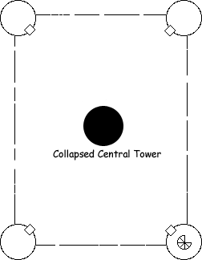
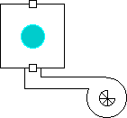
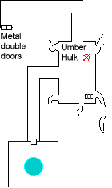
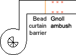

During the overland journey Kaerick had several days to ruminate about the Ghost Gem and Keep Inverness, remembering disparate bits of legend and lore.
In the Elder Days before the Invoked Devastation and the Rain of Colorless Fire, when the ancient peaks of the Abbor-Alz still thrust skyward sharp and majestic and the human tribesmen were but newcomers to the land, there existed between the Bright Desert and the mouth of the river Selintan a great fortress called Inverness. The walls of this castle were said to be proof against enemies and all things magical or natural. Here was said to dwell the great wizard Galap-Dreidel at the height of his power and glory, and that he did lift the Castle Inverness from the very foundation of rock upon which it rested.Most grand and terrible of all Galap-Dreidel's work was the Keep's great inner tower; for it was there that the wizard's most prized possession, an eldritch jewel known only as the 'Ghost Gem', was said to rest. Legend says that it was like a great white diamond and that it glowed with the brilliance of the sun. In years long past it had fallen from the sky and landed in the foothills of Abbor-Alz where Galap-Dreidel discovered it as it lay in the fires of its glory. Through magicks most arcane and knowledge forbidden to mortal men he did bend the power of the stone to his will. Stories say that the light of the gem ripped the life from the bodies of men and disintegrated their flesh to dust. Galap-Dreidel, it was said, harnessed this power and used it against those who opposed his will. They also say that he who controlled the gem could call forth numerous denizens to do his bidding.
For the stone Galap-Dreidel raised up the great central tower and filled his castle with many horrible creatures and deadly traps and, using a great incantation, he did wrest the tower from the very fabric of this plane and set it apart so that those within would not be affected by the passage of years. Thus it was that his traps never faltered nor did his guardians ever age or need food. Townsfolk whispered that Galap-Dreidel would, at times, set a prisoner free in the tower merely for the sport of his beasts. Some legends tell that his power was so great that he even taught the gem to protect itself from those who could take it from him.
But despite his great power there came a time that Galap-Dreidel did leave on a journey northwest, over the river Selintan, and did not return. At this time there came a great multitude of superstitious peoples from surrounding lands who laid siege to the castle and threw down the great tower. And it came to pass that despite this seeming victory over their feared former master the people did shun the area and it was said that on fog-shrouded nights the great central tower of the Fortress Inverness could still be seen.
The Narrator

The party circumnavigated the fortress, passing numerous breaches in the outer walls but little else of note. Katriana, straining to see in the fading light, noted tracks of a giant humanoid near the ruined castle but could not follow them in the rocky terrain. She thought the tracks were about two days old.
Choosing a passable opening the party entered the courtyard. Of the central tower only an enormous pile of debris remained, twenty feet high with chunks of stone up to six feet across. The towers at each corner had fared better, the upper stories partially collapsed but the lower structure remaining intact. Each tower could be entered via a stout iron door with decorative scrollwork carved into the lintel and frame.
Edwin, having just advanced to 7th level as a wizard and eager to try out his new spells, sent an Arcane Eye through an arrow slit of one tower. The upper floors had collapsed to bury the second floor in rubble, but the Eye was able to thread its way through. From the ground floor a spiral staircase descended into an chamber 60 feet across (the same diameter as the tower itself). A twenty foot wide hallway led away from the chamber. The area was nearly pitch black, and the Eye could see no further. Edwin spent a few minutes to memorize and cast Darkvision then conjured another Arcane Eye, but could proceed only a few feet further to a closed door through which the Eye could not pass.

The party entered the tower and descended the staircase. While marching down the underground hall Grapthar noted that the walls did not look terribly stable and might not hold up were any significant force applied to them. Edwin mentally wrote off the multiple Fireballs he had prepared.
Beyond the door the Eye could not pass was a 30' square room. An enormous crystal sphere, fully eight feet in diameter, sat atop a three foot pedestal yet somehow managed to fit beneath the ten foot ceiling. The crystal radiated an overwhelming aura of Conjuration magic. Moving within it could be seen four shadowy shapes, and there were four words inscribed on the sides of the pedestal. The far door to the room was magically Held.
| ALRASTIL | IXAM | PENTUKO | MYRG |
With the defeat of the final creature, the magically Held door on the far side of the room opened. The party followed the hallway around to the right to the threshold of a 50 foot by 30 foot room with 20 foot ceilings. The hallway continued to the north, while a number of irregularly cut tunnels intersected each of the four walls. Edwin had only just completed casting another Arcane Eye when there could be heard a deep rumbling. A huge, humanoid beetle emerged from one of the tunnels.
Edwin's Enormous Trove of Trivia: the Ettercap
"Ettercaps are bipedal arachnoid creatures which tend to live in the company of other spider creatures. They are highly evil and cunning, excelling in the construction of devious traps and cruel instruments of torture. They have spindly arms and legs, a bulbous torso, and are covered with tufts of wiry hair. The Ettercap generates a powerful venom which it can spit for short distances, and can also throw a sticky web substance to entangle its foes."
The Narrator

The creature was not an ettercap, but Edwin had rolled a 1 on his Knowledge (Dungeoneering) and was utterly convinced of his identification. Edwin called out a stream of almost completely useless facts about what was actually an Umber Hulk. Katriana fell victim to its Confusion power first, and simply stood transfixed for a while before turning to attack Edwin (who was closest to her). Edwin dodged out of the way with minimal damage, and Katriana returned to her docile state. Grapthar and Seremak charged in to attack the monster, while Chaden and Kaerick delivered arrows from a distance. Grapthar failed to save against the Confusion, but continued to attack the Umber Hulk as it was the creature nearest to him. Edwin managed to hit it with a Magic Missile before also falling victim to its confusion effect.
Though managing to maul Grapthar, the Umber Hulk proved no match for the party. The Confusion effect persisted for several rounds after its demise, during which Grapthar attacked Seremak. Seremak managed to block the first attack by scrounging up a total Armor Class of 30, but even this was insufficient to block Grapthar's second attack. Seremak was wounded badly.
Edwin's Enormous Trove of Trivia, Redux: the Umber Hulk
"The umber hulk is one of the more powerful and dangerous underground denizens...
These monsters usually prey on other subterranean creatures like anhkhegs and small purple worms, against which the umber hulks developed their powerful offensive array. It is said that umber hulks allow themselves to be swallowed alive by great purple worms for the thrill of 'tunneling out' and slaying the worms...
The most dangerous aspect of the umber hulk is its two sets of eyes. Should any creature of even slight intelligence meet the direct gaze of an umber hulk, it becomes instantly befuddled, often attacking its companions or standing dazed as the creature advances... The victim recovers shortly, usually within a few minutes, unless the monster has eaten him."
from The Ecology of the Umber Hulk by Tony Jones, Dragon Magazine #152
The Narrator
A chest in the corner of the room was neither locked nor trapped. It was filled to the brim with gold and silver coins. For reasons she could not explain Chaden was unable to abide the messy arrangement of coins in the chest and had to spend the better part of an hour arranging them in neat stacks. There were a total of about 7000 gold and 4000 silver coins, which Chaden sorted and neatly stacked in the chest.
There were so many coins that transporting them all was a real issue, the chest was far too heavy to carry. The Friendly Neighborhood Dungeon Masters had prepared for this scenario:
Edwin had cast Arcane Eye shortly before the Umber Hulk appeared, and now sent it to explore the hallway beyond. It traversed several bends in the corridor before coming to huge metal double doors inset with a square channel. The inset appeared to be in the shape of four of the strange metal bars. As there were four towers, the party set out immediately to explore the remaining ones.
The Narrator
It was now daylight outside. The party moved clockwise around the keep to the next tower, checked for traps, and forced the door open. This second tower contained a similar spiral staircase as the first. The underground hallway it led to ended abruptly in a beaded curtain, which radiated an overwhelming aura of Abjuration magic. Various party members poked, prodded, and threw things at the curtain, determining that it required quite a bit of force to pass through. The curtain would not part, objects simply disappeared through it and so it was impossible to see what lay beyond. Nothing could be heard from the other side, even when a heavy stone was thrown through.

Linking hands, the party charged through the curtain with Seremak and Grapthar in front. Grapthar stumbled as he passed through, but amazingly did not drag the rest of the party down into a heap. Nonetheless the six gnolls stationed on the other side got a free surprise round of attacks against the party. One hopes they enjoyed it, as the gnolls did not survive the second round.